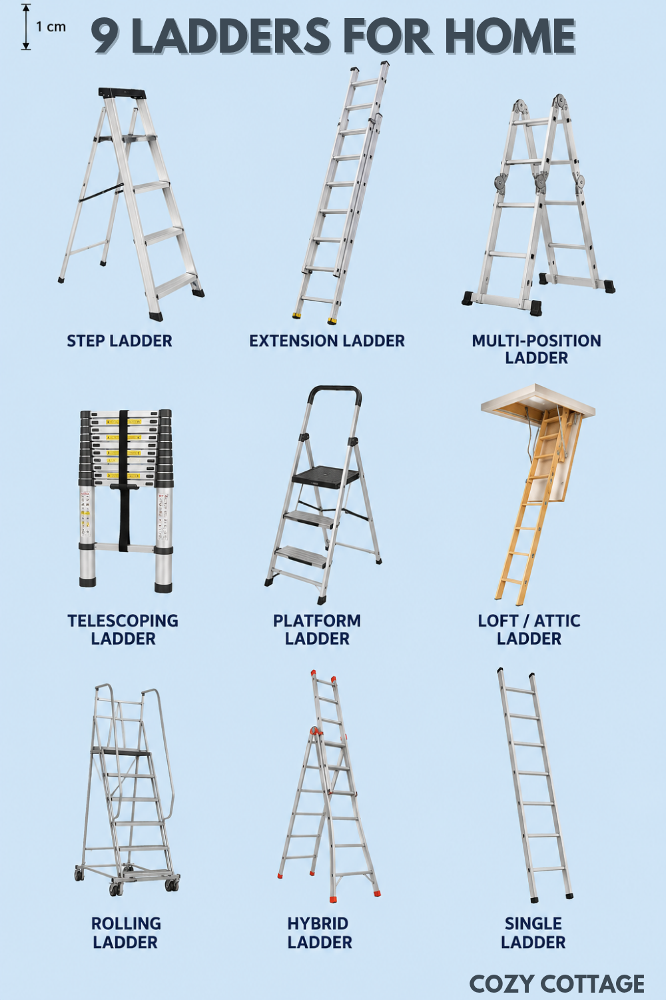

Disclaimer: As an Amazon Associate, I earn from qualifying purchases.
A good ladder is one of those simple tools every home eventually needs. Whether you are changing a light bulb, cleaning ceiling fans before monsoon, painting walls, trimming plants in the garden, or reaching attic storage, the right ladder makes the work safer and much easier.
Today there are many kinds of ladders designed for different spaces and purposes. Some are compact enough for tiny apartments, while others are made for outdoor roof work and heavy-duty repairs. Choosing the correct ladder is not just about height — stability, material, storage, and safety all matter too.
“A sturdy ladder quietly becomes one of the most useful tools in a home — especially for everyday repairs, cleaning, and seasonal maintenance.”

Disclaimer: As an Amazon Associate, I earn from qualifying purchases.
1. Step Ladder
Step ladders are the most common household ladders. They open in an “A” shape and stand on their own without needing wall support. These are ideal for indoor work and small repairs around the house.
Daily Home Tasks
Perfect for changing bulbs, reaching kitchen shelves, cleaning fans, hanging curtains, and decorating during festivals.
HOUZA Aluminium Ladder for Home 8 Steps Foldable with Railing
Check this Step Ladder on Amazon →
Eurostar 108 Aluminum 7-Step + Step Ladder (Silver)
Check this Step Ladder on Amazon →
2. Extension Ladder
Extension ladders are designed for tall outdoor work. They can extend upward and lean against walls, trees, or rooftops. These ladders are commonly used for exterior painting and roof access.
Always place extension ladders on level ground and maintain three points of contact while climbing.
Venus 12 ft Wall Supporting Aluminum Extension Ladder (Extends to 21 ft) - Foldable with Rope Pulley & Anti-Skid Design
Check this ladder on Amazon →
3. Multi-Position Ladder
Multi-position ladders are flexible ladders that can transform into several shapes. They can work as step ladders, extension ladders, scaffold supports, and stair ladders.
- Great for DIY work and home renovation projects.
- Useful for uneven surfaces and staircases.
- Easy to fold and store.
Corvids 14.5 Feet (16 Steps) Portable & Compact Folding Aluminium Multipurpose Super Ladder
Check this Multi-Purpose Ladder on Amazon →
Prime Amaze 20 Feet (20 Steps) Multipurpose Aluminium Ladder - 8-in-1 Foldable Adjustable Ladder
Check this Multi-Purpose Ladder on Amazon →
4. Telescoping Ladder
Telescoping ladders collapse into a compact size, making them excellent for apartments and smaller homes where storage space is limited.
Compact & Portable
These ladders can fit inside cupboards, car trunks, or utility rooms while still reaching impressive heights when extended.
BonKaso Telescopic Ladder, 4.4m / 14 Ft, 15 Steps – Heavy-Duty Foldable Alloy Steel Ladder
Check this Telescoping Ladder on Amazon →
AGARO 2.0m (6.5 ft) Aluminium Telescopic Ladder
Check this Telescoping Ladder on Amazon →
5. Platform Ladder
Platform ladders include a larger standing platform near the top, making them safer and more comfortable for longer tasks like painting or electrical work.
The wider standing area reduces foot fatigue and improves balance during extended work sessions.
Lifelong 5 Steps Steel Platform Ladder with Handle for Home, Foldable & Portable Stairs
Check this Platform Ladder on Amazon →
Norman Jr Blue 5 Step Platform Ladder for Home Use with Built-in Tool Tray
Check this Platform Ladder on Amazon →
Bathla 6 Step Ascend Steel Large Plaform Ladder for Home Use
Check this Platform Ladder on Amazon →
6. Attic or Loft Ladder
Loft ladders are attached to attic openings and fold neatly into the ceiling when not in use. These are especially useful for homes with overhead storage areas.
12 Steps Attic Stairs,Wall Mounted Folding Loft Ladder
Check this Loft Ladder on Amazon →
Check this Loft Ladder on Amazon →
7. Single Ladder
Single ladders, often called straight or wall-supported ladders, are non-self-supporting, single-piece ladders designed for vertical access. Common in aluminum or fiberglass, they are ideal for industrial maintenance, roofing, and painting.
Venus 8ft Wall Supported Aluminum Step Ladder |
Check this Single Ladder on Amazon →
Choosing the Right Ladder Material
Aluminum
Lightweight, affordable, and rust-resistant. Best for general home use.
Fiberglass
Non-conductive and safer for electrical work. Strong and durable but heavier.
Steel
Very stable and durable for indoor use, though heavier to move around.
Never use aluminum ladders near live electrical wiring. Fiberglass ladders are the safer choice for electrical work.
Final Thoughts
The best ladder depends entirely on your home and how you plan to use it. A compact step ladder may be enough for everyday household chores, while homeowners with gardens, terraces, or rooftops may benefit from extension or multi-purpose ladders.
Investing in a sturdy ladder is worthwhile because it becomes useful throughout the year — from cleaning and repairs to decorating and seasonal maintenance.
Disclaimer: As an Amazon Associate, I earn from qualifying purchases.